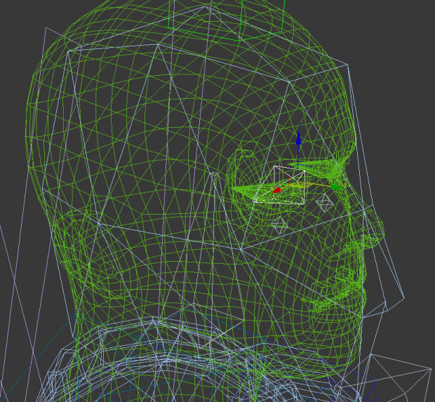
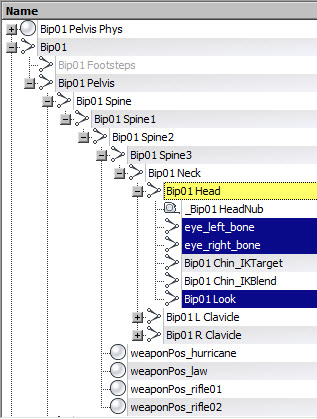

Overview
CRYENGINE supports parametric-blending for automated Look IK that can be used to make characters look at points in the 3D world. This system is used from the code, from AI and can be used by designers through Flow Graph.
You can combine it with different locomotion cycles. The character with Look IK on tries to look in the target direction as long as possible, then it turns its head away. Warping is really preserving the style of the base-motion, because we always start with the final animation pose and add small modifications to it to comply with the new constraints. The spine, head and the eyeballs are animated to make the character look in the target direction. The eye-lids move as well creating believable Gaze Control.
The same techniques is used in half-interactive cut-scenes, to make sure the actors makes eye-contact with the player.
Look IK Setup
Skeleton Setup
Refer to Skeleton Setup section in Aim IK (aimposes).
Setting up the Character in 3ds Max
Your character needs a Look IK bone as shown in the picture below. 
The Look IK bone is a child of the Head bone. Make sure your eye bones are also properly named and children of the Head bone. 
If you are switching from the older Look IK system, you have to re-export all your chrs after adding the Look IK bone.